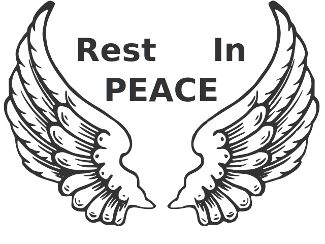

Enéas Ferreira Carneiro
Summary of his life
Enéas Ferreira Carneiro was born on November 5th, 1938, in the city of Rio Branco, in the state of Acre, Brazil, the son of Eustáquio José Carneiro and Mina Ferreira Carneiro. He had relationships with three women through his life, having one daughter with each one. Even though he didn't have a doctorate degree, he was known as Dr. Enéas, for being a very intelligent individual. Enéas studied during his entire life, he was a doctor, military, professor, physicist, mathematician, translator and even worked at a butcher shop. He was an expert of many areas of knowledge, being considered a polymath. Enéas founded the extinct political party, Partido da Reedificação da Ordem Nacional (PRONA), in 1989.
Being an extreme cult and peculiar person, and having a very big and characteristic beard, Enéas became famous with his catchphrase “My name is Enéas”, which was said at the end of his speeches on the television, where he had only fifteen seconds to talk, way less than the other candidates. Because of that, he could not express his ideas very well, making many people consider him to be crazy, making them think he was a lunatic running after the presidential chair. However, he was far from being crazy. He was firm in his ideals and was an intense defender of his homeland and family values. He always made his beliefs clear: he believed in a strong, wealthy and sovereign Brazil, and was against the corruption and everything wrong happening in the system.
Likewise, he was a defender of a strong, technical and interventionist government, and critical about a small state. Enéas was against the privatizations of the Brazilian state properties, because he claimed that it would mean giving up strategical and vital points of the nation to the international financial system. Despite defending a strong state, he was in favor of a free market and private property, and against socialism, because he said that, with all the satisfied needs, the population would go into lethargy. One of the most controversial of his statements was the creation of the atomic bomb, because, according to him, The bomb is not for making war, it is the guarantee of peace.
, in other words, to sit with the other nations at the negotiating table.
His life was full of ups and downs, since he dedicated a lot of his time to the political career, which caused the divorce with his last wife, and the disposal of his belongings to found his political party. Furthermore, he was diagnosed, years later, with leukemia. Enéas Carneiro passed away on May 6th, 2007, at 68 years old, because of his cancer. Despite that, he left the legacy as one of the most intelligent, politic and patriotic men to date, inspiring many people with his knowledge, wisdom, and love for the country. Only on YouTube, there are a lot of videos and documentaries about him that total millions of views. There are many positive comments of people from different political ideologies, which makes it clear that his memories will not be forgotten too soon.
The difference between an individual that cleans the floor and an astrophysicist is a difference of information… The one who cleans the floor learned very little, he only knows how to clean the floor, but, he is as useful as an astrophysicist, he has the right of a dignified life.
Highlights of his career
Still young, Enéas worked hard to make ends meet for him and his widowed mother. Because he could not dedicate his time to study medicine, he decided to follow a military career, taking the course within the military medical school, being graduated, 3° anesthesia assistant sergeant, in the first place of his class. In 1960, he took the entrance exam to the Fluminense medicine college and the university of medicine and surgery of Rio de Janeiro, obtaining first place. In 1965, he received his first doctor degree from the college of Rio de Janeiro. During 8 years in the military hospital, he performed more than 5000 anesthesia, receiving the medal, Marechal Hermes.

After 8 years in the central hospital of the army, he developed didactic activity, teaching in preparatory courses as a physics teacher, and founded the course Gradiente, where he was the director and president and taught physics, chemistry, mathematics, biology, and Portuguese. From 1973 to 1975, he realized a master's degree in cardiology, teaching philosophy and cardiovascular semiology during his period at UFRJ. In 1977, he wrote the book “O Eletrocardiograma”, being the most complete book of the genre in the Portuguese language. In 1985, he taught a Portuguese course for Portuguese teachers, candidates of a public tender of the state.
Still in 1985, Enéas realized the course "O Eletrocardiograma", in Quito, Ecuador. Therefore, he received the title of honorary member of the Ecuadorian Society of Cardiology. A year later, he gave the first national course in Copacabana Palace, with the participation of 302 doctors from all over Brazil. He was president of the Cardiology Society of the state of Rio de Janeiro, promoting the first advertising campaign against the arterial hypertension, where more than 6800 people were examined. Also promoted the first campaign against smoking. In 1987, he released the book called “O Eletrocardiograma - 10 anos depois”, with more than 20 000 copies sold.